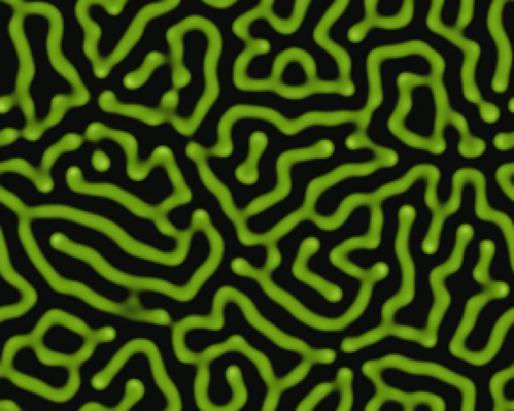

Reaction–diffusion
Reaction–diffusion is a WebGL effect: gray–Scott: two chemicals, feed and kill. One plain JavaScript file with no dependencies; add it with npx motion-library add reaction-diffusion.

Open it live, tune it and copy the code
What is Reaction–diffusion?
Spots, stripes and coral patterns grow and shift across the surface.
How does Reaction–diffusion work?
A Gray-Scott-style reaction–diffusion on the GPU, several steps per frame; two chemicals spread at different rates and the feed and kill rates set the pattern.
How do I add Reaction–diffusion to my website?
- In your project folder, run
npx motion-library add reaction-diffusion. It writesanimations/reaction-diffusion.js. Needs Node 18 or newer. - Import it and call it with a container element that has a size:
import fx from './animations/reaction-diffusion.js'; const stop = fx(document.querySelector('#hero')); - Call
stop()to clean up, for example when a component unmounts.
Every setting below is also a flag, so you can install it already tuned: npx motion-library add reaction-diffusion --feed 0.05.
What settings can I tweak?
| Setting | Flag | Default | Range | Step |
|---|---|---|---|---|
| Feed | --feed | 0.037 | 0.025 to 0.05 | 0.001 |
| Kill | --kill | 0.06 | 0.058 to 0.0655 | 0.0005 |
Specifications
- Renderer
- WebGL
- Category
- Shaders & glitch
- Dependencies
- None
- File size
- 5.7 KB, unminified
- Interactive
- No: it plays on its own
- Reduced motion
- Plays the same for everyone
- Licence
- MIT-0: use it anywhere, no credit needed
Source code
// Reaction–diffusion (Gray–Scott): chemical B eats A, both spread at different rates, A is fed in and B dies off.
// The balance of feed and kill decides the pattern: spots, stripes or coral. Runs on the GPU, 12 steps a frame.
const PARAMS = { feed: 0.037, kill: 0.06 };
export default function (stage) {
const canvas = document.createElement('canvas');
canvas.style.cssText = 'position:absolute;inset:0;width:100%;height:100%;display:block';
stage.append(canvas);
const gl = canvas.getContext('webgl2', { antialias: false });
if (!gl || !gl.getExtension('EXT_color_buffer_float')) { stage.textContent = 'This needs WebGL2 with float render targets.'; return () => canvas.remove(); }
const vs = `#version 300 es
in vec2 p; out vec2 uv; void main() { uv = p * .5 + .5; gl_Position = vec4(p, 0, 1); }`;
const simFs = `#version 300 es
precision highp float; in vec2 uv; out vec4 o;
uniform sampler2D S; uniform vec2 px; uniform float F, K; uniform vec3 seed;
void main() {
vec2 c = texture(S, uv).rg;
// 3x3 Laplacian: centre -1, edges .2, corners .05
vec2 lap = -c;
lap += .2 * (texture(S, uv + vec2(px.x, 0)).rg + texture(S, uv - vec2(px.x, 0)).rg + texture(S, uv + vec2(0, px.y)).rg + texture(S, uv - vec2(0, px.y)).rg);
lap += .05 * (texture(S, uv + px).rg + texture(S, uv - px).rg + texture(S, uv + vec2(px.x, -px.y)).rg + texture(S, uv + vec2(-px.x, px.y)).rg);
float a = c.r, b = c.g, abb = a * b * b;
a += 1. * lap.r - abb + F * (1. - a);
b += .5 * lap.g + abb - (K + F) * b;
if (seed.z > 0. && distance(uv / px, seed.xy / px) < seed.z) b = .9;
o = vec4(clamp(a, 0., 1.), clamp(b, 0., 1.), 0, 1);
}`;
const showFs = `#version 300 es
precision highp float; in vec2 uv; out vec4 o; uniform sampler2D S;
void main() {
float b = texture(S, uv).g, t = smoothstep(.12, .32, b);
vec3 col = mix(vec3(.045, .05, .04), vec3(.42, .62, .06), t); // dark ground, the pattern grows in luminous lime
col = mix(col, vec3(.86, 1., .42), smoothstep(.3, .45, b));
o = vec4(col, 1);
}`;
const sh = (t, s) => { const x = gl.createShader(t); gl.shaderSource(x, s); gl.compileShader(x); if (!gl.getShaderParameter(x, gl.COMPILE_STATUS)) throw new Error(gl.getShaderInfoLog(x)); return x; };
const mk = fs => { const p = gl.createProgram(); gl.attachShader(p, sh(gl.VERTEX_SHADER, vs)); gl.attachShader(p, sh(gl.FRAGMENT_SHADER, fs)); gl.bindAttribLocation(p, 0, 'p'); gl.linkProgram(p); return p; };
const sim = mk(simFs), show = mk(showFs);
gl.bindBuffer(gl.ARRAY_BUFFER, gl.createBuffer()); gl.bufferData(gl.ARRAY_BUFFER, new Float32Array([-1, -1, 3, -1, -1, 3]), gl.STATIC_DRAW);
gl.enableVertexAttribArray(0); gl.vertexAttribPointer(0, 2, gl.FLOAT, false, 0, 0);
const aspect = stage.clientWidth / Math.max(1, stage.clientHeight);
const SH = 220, SW = Math.round(SH * aspect);
// start: A everywhere, a few drops of B
const init = new Float32Array(SW * SH * 4);
for (let i = 0; i < SW * SH; i++) init[i * 4] = 1;
for (let k = 0; k < 14; k++) {
const cx = Math.random() * SW, cy = Math.random() * SH, r = 2 + Math.random() * 4;
for (let y = -r; y <= r; y++) for (let x = -r; x <= r; x++) { const X = (cx + x) | 0, Y = (cy + y) | 0; if (X >= 0 && X < SW && Y >= 0 && Y < SH && x * x + y * y <= r * r) init[(Y * SW + X) * 4 + 1] = 0.9; }
}
const target = () => {
const tex = gl.createTexture(); gl.bindTexture(gl.TEXTURE_2D, tex);
gl.texImage2D(gl.TEXTURE_2D, 0, gl.RGBA32F, SW, SH, 0, gl.RGBA, gl.FLOAT, init);
gl.texParameteri(gl.TEXTURE_2D, gl.TEXTURE_MIN_FILTER, gl.NEAREST); gl.texParameteri(gl.TEXTURE_2D, gl.TEXTURE_MAG_FILTER, gl.NEAREST);
gl.texParameteri(gl.TEXTURE_2D, gl.TEXTURE_WRAP_S, gl.REPEAT); gl.texParameteri(gl.TEXTURE_2D, gl.TEXTURE_WRAP_T, gl.REPEAT);
const fb = gl.createFramebuffer(); gl.bindFramebuffer(gl.FRAMEBUFFER, fb); gl.framebufferTexture2D(gl.FRAMEBUFFER, gl.COLOR_ATTACHMENT0, gl.TEXTURE_2D, tex, 0);
return { tex, fb };
};
let A = target(), B = target();
const su = n => gl.getUniformLocation(sim, n), uS = su('S'), uPx = su('px'), uF = su('F'), uK = su('K'), uSeed = su('seed');
const resize = () => { const d = Math.min(devicePixelRatio, 1.5); canvas.width = stage.clientWidth * d | 0; canvas.height = stage.clientHeight * d | 0; };
const ro = new ResizeObserver(resize); ro.observe(stage); resize();
let seed = [0, 0, 0], lastMove = -1e9;
const onMove = e => { const b = canvas.getBoundingClientRect(); seed = [(e.clientX - b.left) / b.width, 1 - (e.clientY - b.top) / b.height, 3]; lastMove = performance.now(); };
canvas.addEventListener('pointermove', onMove);
let raf, acc = 0, last = performance.now();
function frame(now) {
acc += (now - last) / 1000; last = now;
if (now - lastMove > 1500 && acc > 0.6) { acc = 0; seed = [Math.random(), Math.random(), 3]; }
gl.useProgram(sim); gl.viewport(0, 0, SW, SH);
gl.uniform2f(uPx, 1 / SW, 1 / SH); gl.uniform1f(uF, PARAMS.feed); gl.uniform1f(uK, PARAMS.kill); gl.uniform1i(uS, 0);
for (let i = 0; i < 12; i++) {
gl.uniform3f(uSeed, seed[0], seed[1], i === 0 ? seed[2] : 0);
gl.bindFramebuffer(gl.FRAMEBUFFER, B.fb); gl.activeTexture(gl.TEXTURE0); gl.bindTexture(gl.TEXTURE_2D, A.tex);
gl.drawArrays(gl.TRIANGLES, 0, 3); [A, B] = [B, A];
}
seed[2] = 0;
gl.useProgram(show); gl.bindFramebuffer(gl.FRAMEBUFFER, null); gl.viewport(0, 0, canvas.width, canvas.height);
gl.bindTexture(gl.TEXTURE_2D, A.tex); gl.drawArrays(gl.TRIANGLES, 0, 3);
raf = requestAnimationFrame(frame);
}
raf = requestAnimationFrame(frame);
return () => { cancelAnimationFrame(raf); ro.disconnect(); canvas.removeEventListener('pointermove', onMove); gl.getExtension('WEBGL_lose_context')?.loseContext(); canvas.remove(); };
}